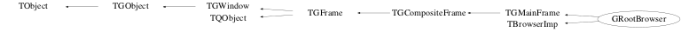

class GRootBrowser: public TGMainFrame, public TBrowserImp
GRootBrowser The main ROOT object browser.
Function Members (Methods)
public:
protected:
| static Int_t | TQObject::CheckConnectArgs(TQObject* sender, TClass* sender_class, const char* signal, TClass* receiver_class, const char* slot) |
| static Bool_t | TQObject::ConnectToClass(TQObject* sender, const char* signal, TClass* receiver_class, void* receiver, const char* slot) |
| static Bool_t | TQObject::ConnectToClass(const char* sender_class, const char* signal, TClass* receiver_class, void* receiver, const char* slot) |
| virtual void | TObject::DoError(int level, const char* location, const char* fmt, va_list va) const |
| virtual void | TGFrame::DoRedraw() |
| virtual void | TGFrame::Draw3dRectangle(UInt_t type, Int_t x, Int_t y, UInt_t w, UInt_t h) |
| static Time_t | TGFrame::GetLastClick() |
| TString | TGMainFrame::GetMWMfuncString() const |
| TString | TGMainFrame::GetMWMinpString() const |
| TString | TGMainFrame::GetMWMvalueString() const |
| TString | TGFrame::GetOptionString() const |
| const TGResourcePool* | TGFrame::GetResourcePool() const |
| virtual void* | TGFrame::GetSender() |
| virtual const char* | TQObject::GetSenderClassName() const |
| void | TObject::MakeZombie() |
| virtual void | TGFrame::StartGuiBuilding(Bool_t on = kTRUE) |
private:
| GRootBrowser(const GRootBrowser&) | |
| GRootBrowser& | operator=(const GRootBrowser&) |
Data Members
public:
| enum ENewBrowserMessages { | kBrowse | |
| kOpenFile | ||
| kClone | ||
| kHelpAbout | ||
| kHelpOnBrowser | ||
| kHelpOnCanvas | ||
| kHelpOnMenus | ||
| kHelpOnGraphicsEd | ||
| kHelpOnObjects | ||
| kHelpOnPS | ||
| kHelpOnRemote | ||
| kNewEditor | ||
| kNewCanvas | ||
| kNewHtml | ||
| kExecPluginMacro | ||
| kExecPluginCmd | ||
| kCloseTab | ||
| kCloseWindow | ||
| kQuitRoot | ||
| }; | ||
| enum EInsertPosition { | kLeft | |
| kRight | ||
| kBottom | ||
| }; | ||
| enum TGMainFrame::[unnamed] { | kDontCallClose | |
| }; | ||
| enum TGFrame::[unnamed] { | kDeleteWindowCalled | |
| }; | ||
| enum TGWindow::EEditMode { | kEditEnable | |
| kEditDisable | ||
| kEditDisableEvents | ||
| kEditDisableGrab | ||
| kEditDisableLayout | ||
| kEditDisableResize | ||
| kEditDisableHeight | ||
| kEditDisableWidth | ||
| kEditDisableBtnEnable | ||
| kEditDisableKeyEnable | ||
| }; | ||
| enum TObject::EStatusBits { | kCanDelete | |
| kMustCleanup | ||
| kObjInCanvas | ||
| kIsReferenced | ||
| kHasUUID | ||
| kCannotPick | ||
| kNoContextMenu | ||
| kInvalidObject | ||
| }; | ||
| enum TObject::[unnamed] { | kIsOnHeap | |
| kNotDeleted | ||
| kZombie | ||
| kBitMask | ||
| kSingleKey | ||
| kOverwrite | ||
| kWriteDelete | ||
| }; |
protected:
| TBrowserImp* | fActBrowser | Actual (active) browser imp |
| TGCompositeFrame* | fActMenuBar | Actual (active) menu bar |
| Pixel_t | TGFrame::fBackground | frame background color |
| TList* | TGMainFrame::fBindList | list with key bindings |
| Int_t | TGFrame::fBorderWidth | frame border width |
| TBrowser* | TBrowserImp::fBrowser | TBrowser associated with this implementation |
| TList | fBrowsers | List of (sub)browsers |
| TString | TGMainFrame::fClassName | WM class name |
| TGClient* | TGObject::fClient | Connection to display server |
| Int_t | fCrTab[3] | Actual (active) tab elements (for each Tab) |
| Int_t | TGFrame::fDNDState | EDNDFlags |
| Atom_t* | TGMainFrame::fDNDTypeList | handles DND types |
| UInt_t | TGWindow::fEditDisabled | flags used for "guibuilding" |
| TGCompositeFrame* | fEditFrame | Frame in "Edit" mode |
| Int_t | fEditPos | Id of tab in "Edit" mode |
| Int_t | fEditSubPos | Id of subtab in "Edit" mode |
| TGTab* | fEditTab | Tab in "Edit" mode |
| UInt_t | TGFrame::fEventMask | currenty active event mask |
| TGFrameElement* | TGFrame::fFE | pointer to frame element |
| TGHorizontalFrame* | fH1 | Horizontal frame |
| TGHorizontalFrame* | fH2 | Horizontal frame |
| TGHSplitter* | fHSplitter | Horizontal splitter |
| UInt_t | TGFrame::fHeight | frame height |
| TGHorizontalFrame* | fHf | Horizontal frame |
| TString | TGMainFrame::fIconName | icon name |
| const TGPicture* | fIconPic | icon picture |
| TString | TGMainFrame::fIconPixmap | icon pixmap name |
| Handle_t | TGObject::fId | X11/Win32 Window identifier |
| TGLayoutHints* | fLH0 | |
| TGLayoutHints* | fLH1 | |
| TGLayoutHints* | fLH2 | |
| TGLayoutHints* | fLH3 | Layout hints, part 1 |
| TGLayoutHints* | fLH4 | |
| TGLayoutHints* | fLH5 | |
| TGLayoutHints* | fLH6 | |
| TGLayoutHints* | fLH7 | Layout hints, part 2 |
| Bool_t | TGCompositeFrame::fLayoutBroken | no layout manager is used |
| TGLayoutManager* | TGCompositeFrame::fLayoutManager | layout manager |
| TList* | TGCompositeFrame::fList | container of frame elements |
| TList* | TQObject::fListOfConnections | ! list of connections to this object |
| TList* | TQObject::fListOfSignals | ! list of signals from this object |
| UInt_t | TGMainFrame::fMWMFuncs | MWM functions |
| UInt_t | TGMainFrame::fMWMInput | MWM input modes |
| UInt_t | TGMainFrame::fMWMValue | MWM decoration hints |
| Bool_t | TGCompositeFrame::fMapSubwindows | kTRUE - map subwindows |
| UInt_t | TGFrame::fMaxHeight | maximal frame height |
| UInt_t | TGFrame::fMaxWidth | maximal frame width |
| TGMenuBar* | fMenuBar | Main (owned) menu bar |
| TGPopupMenu* | fMenuExecPlugin | "Exec Plugin" popup menu |
| TGPopupMenu* | fMenuFile | "File" popup menu |
| TGHorizontalFrame* | fMenuFrame | Shared menu frame |
| TGPopupMenu* | fMenuHelp | "Browser Help" popup menu |
| UInt_t | TGFrame::fMinHeight | minimal frame height |
| UInt_t | TGFrame::fMinWidth | minimal frame width |
| Int_t | TGCompositeFrame::fMustCleanup | cleanup mode (see EFrameCleanup) |
| TString | TGWindow::fName | name of the window used in SavePrimitive() |
| Int_t | fNbInitPlugins | Number of initial plugins (from .rootrc) |
| Int_t | fNbTab[3] | Number of tab elements (for each Tab) |
| Bool_t | TGWindow::fNeedRedraw | kTRUE if window needs to be redrawn |
| UInt_t | TGFrame::fOptions | frame options |
| const TGWindow* | TGWindow::fParent | Parent window |
| Int_t | fPid | Current process id |
| TList | fPlugins | List of plugins |
| TGHorizontalFrame* | fPreMenuFrame | First (owned) menu frame |
| TString | TGMainFrame::fResourceName | WM resource name |
| Bool_t | fShowCloseTab | kTRUE to show close icon on tab elements |
| Bool_t | TBrowserImp::fShowCycles | Show object cycle numbers in browser |
| Bool_t | TQObject::fSignalsBlocked | ! flag used for suppression of signals |
| TGStatusBar* | fStatusBar | Status bar |
| TGTab* | fTabBottom | Bottom Tab |
| TGTab* | fTabLeft | Left Tab |
| TGTab* | fTabRight | Right Tab |
| TGHorizontalFrame* | fToolbarFrame | Toolbar frame |
| TGHorizontalFrame* | fTopMenuFrame | Top menu frame |
| TGVerticalFrame* | fV1 | Vertical frame |
| TGVerticalFrame* | fV2 | Vertical frame |
| TGVSplitter* | fVSplitter | Vertical splitter |
| TGVerticalFrame* | fVf | Vertical frame |
| UInt_t | TGMainFrame::fWMHeight | WM height |
| UInt_t | TGMainFrame::fWMHeightInc | WM height increments |
| EInitialState | TGMainFrame::fWMInitState | WM initial state |
| UInt_t | TGMainFrame::fWMMaxHeight | WM max height |
| UInt_t | TGMainFrame::fWMMaxWidth | WM max width |
| UInt_t | TGMainFrame::fWMMinHeight | WM min height |
| UInt_t | TGMainFrame::fWMMinWidth | WM min width |
| UInt_t | TGMainFrame::fWMWidth | WM width |
| UInt_t | TGMainFrame::fWMWidthInc | WM width increments |
| Int_t | TGMainFrame::fWMX | WM x position |
| Int_t | TGMainFrame::fWMY | WM y position |
| UInt_t | TGFrame::fWidth | frame width |
| TString | TGMainFrame::fWindowName | window name |
| Int_t | TGFrame::fX | frame x position |
| Int_t | TGFrame::fY | frame y position |
| static Bool_t | TQObject::fgAllSignalsBlocked | flag used for suppression of all signals |
| static const TGGC* | TGFrame::fgBckgndGC | |
| static const TGGC* | TGFrame::fgBlackGC | |
| static Pixel_t | TGFrame::fgBlackPixel | |
| static Int_t | TGWindow::fgCounter | counter of created windows in SavePrimitive |
| static Window_t | TGFrame::fgDbw | |
| static Int_t | TGFrame::fgDbx | |
| static Int_t | TGFrame::fgDby | |
| static Pixel_t | TGFrame::fgDefaultFrameBackground | |
| static TGLayoutHints* | TGCompositeFrame::fgDefaultHints | default hints used by AddFrame() |
| static Pixel_t | TGFrame::fgDefaultSelectedBackground | |
| static const TGGC* | TGFrame::fgHilightGC | |
| static Bool_t | TGFrame::fgInit | |
| static UInt_t | TGFrame::fgLastButton | |
| static Time_t | TGFrame::fgLastClick | |
| static const TGGC* | TGFrame::fgShadowGC | |
| static UInt_t | TGFrame::fgUserColor | |
| static const TGGC* | TGFrame::fgWhiteGC | |
| static Pixel_t | TGFrame::fgWhitePixel |
Class Charts



Function documentation
GRootBrowser(TBrowser* b = 0, const char* name = "ROOT Browser", UInt_t width = 800, UInt_t height = 500, Option_t* opt = "", Bool_t initshow = kTRUE)
Create browser with a specified width and height.
GRootBrowser(TBrowser* b, const char* name, Int_t x, Int_t y, UInt_t width, UInt_t height, Option_t* opt = "", Bool_t initshow = kTRUE)
Create browser with a specified width and height and at position x, y.
void CreateBrowser(const char* name)
void BrowseObj(TObject* obj)
Browse object. This, in turn, will trigger the calling of GRootBrowser::Add() which will fill the IconBox and the tree. Emits signal "BrowseObj(TObject*)".
void CloneBrowser()
void EventInfo(Int_t event, Int_t px, Int_t py, TObject* selected)
Display a tooltip with infos about the primitive below the cursor.
Long_t ExecPlugin(const char* name = 0, const char* fname = 0, const char* cmd = 0, Int_t pos = kRight, Int_t subpos = -1)
Execute a macro and embed the created frame in the tab "pos" and tab element "subpos".
void InitPlugins(Option_t* opt = "")
Initialize default plugins. Could be also of the form: StartEmbedding(0); TPluginHandler *ph; ph = gROOT->GetPluginManager()->FindHandler("TGClassBrowser"); if (ph && ph->LoadPlugin() != -1) { ph->ExecPlugin(3, gClient->GetRoot(), 200, 500); } StopEmbedding();
void RecursiveReparent(TGPopupMenu* popup)
Recursively reparent TGPopupMenu to gClient->GetDefaultRoot().
void SetTabTitle(const char* title, Int_t pos = kRight, Int_t subpos = -1)
Set text "title" of Tab "subpos" in TGTab "pos".
void StartEmbedding(Int_t pos = kRight, Int_t subpos = -1)
Start embedding external frame in the tab "pos" and tab element "subpos".
void StopEmbedding(const char* name, TGLayoutHints* layout)
Stop embedding external frame in the current editable frame.
void SwitchMenus(TGCompositeFrame* from)
Move the menu from original frame to our TGMenuFrame, or display the menu associated to the current tab.
TBrowserImp * NewBrowser(TBrowser* b = 0, const char* title = "ROOT Browser", UInt_t width = 800, UInt_t height = 500, Option_t* opt = "")
static contructor returning TBrowserImp, as needed by the plugin mechanism.
TBrowserImp * NewBrowser(TBrowser* b, const char* title, Int_t x, Int_t y, UInt_t width, UInt_t height, Option_t* opt = "")
static contructor returning TBrowserImp, as needed by the plugin mechanism.
GRootBrowser(const GRootBrowser& )
GRootBrowser& operator=(const GRootBrowser& )